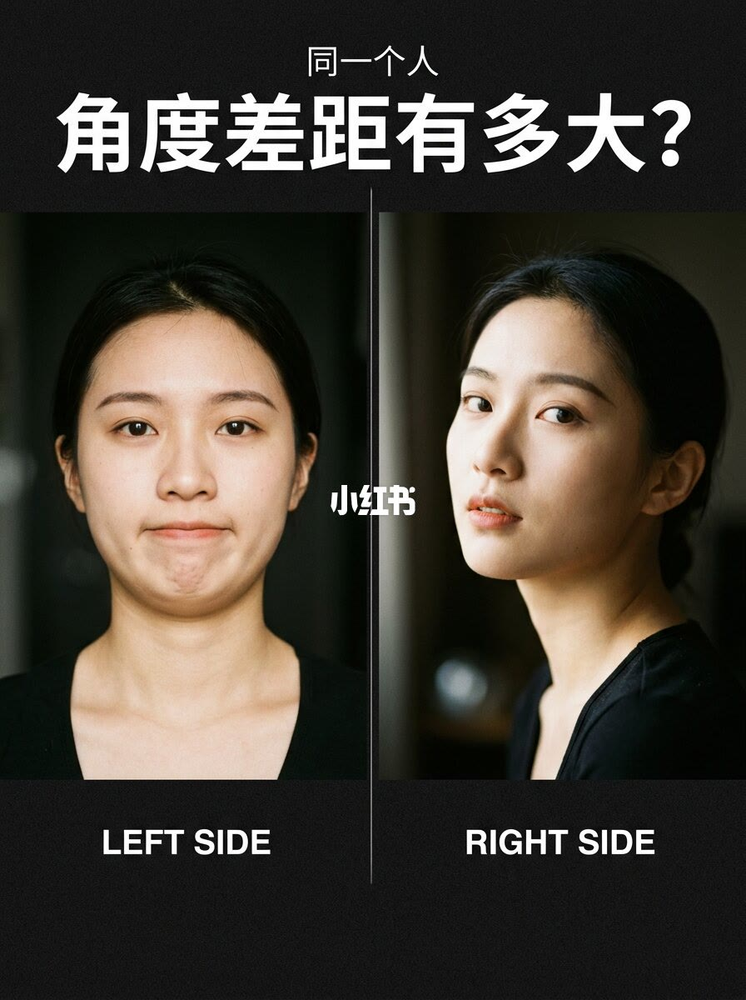
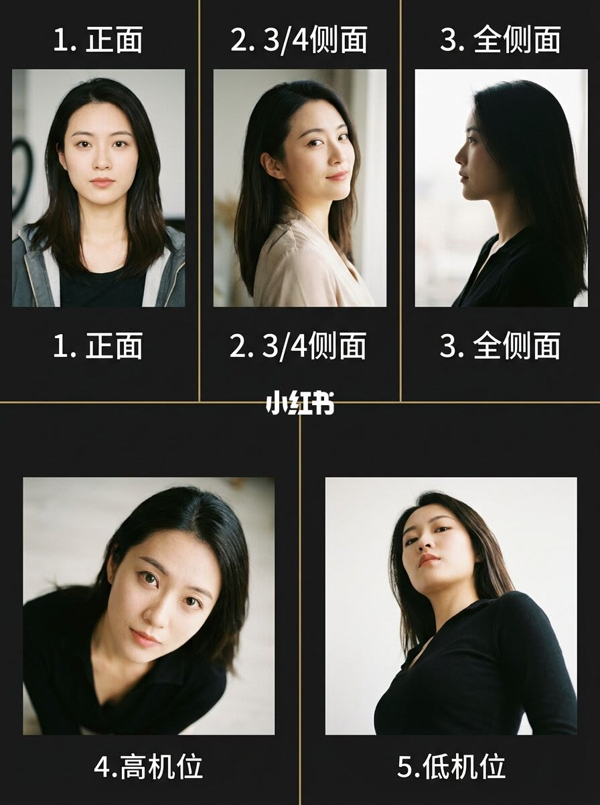
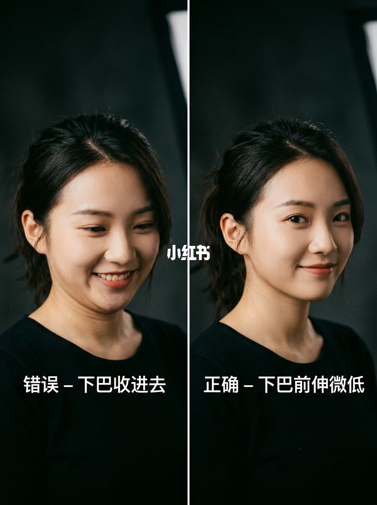
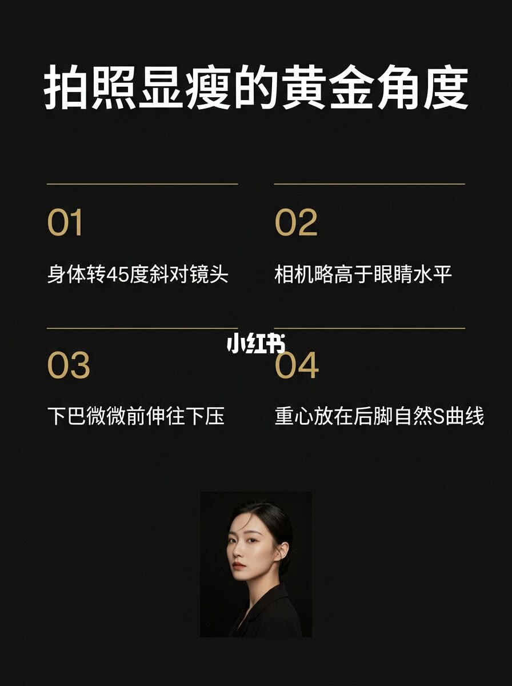

图文实录 · 小红书 · 屿野
同一个人，换个角度，差距有多大？
四页把「显瘦」拆成转头、机位和下巴。正面显得宽，四分之三侧面和下巴前伸是图上给出的改法。
1/4
正面和侧面并排
标题是「同一个人 角度差距有多大」。左边标 LEFT SIDE，是正对镜头、头发全部拨开的一张；右边标 RIGHT SIDE，头转到大约四分之三。左边脸更圆、光更平；右边下颌线和颧骨更清楚，光从一侧过来。图上没有写焦距或身高。

2/4
五种机位
五张小图按序号标着：1 正面，2 四分之三侧面，3 全侧面，4 高机位，5 低机位。高机位是镜头在上、人抬头看；低机位是镜头在下、人低头看。这一页只给名字，没有写哪种更瘦。

3/4
下巴收进去是错的
左边标「错误 — 下巴收进去」：笑得开、低头、下巴往脖子里收，颈前多出一圈。右边标「正确 — 下巴前伸微低」：嘴角收着，下巴向前、略低，颈线拉长。对比只在下巴，衣服和背景没有变。

4/4
四条黄金角度
标题「拍照显瘦的黄金角度」。01 身体转 45 度斜对镜头。02 相机略高于眼睛。03 下巴微微前伸往下压。04 重心放在后脚，走出自然 S 曲线。底下有一张四分之三的人像，对应第 01 条。没有厘米、没有角度仪。

汇总
改的是机位和下巴，不是脸
第 1 页用正侧对比说明角度会改轮廓。第 3 页把下巴内收标成错误、前伸微低标成正确。第 4 页收成转 45 度、相机略高于眼、下巴前伸下压、重心在后脚。第 2 页只命名五种机位，没有参加这套「正确」。这是一个人的示范，不是所有脸型的规则。